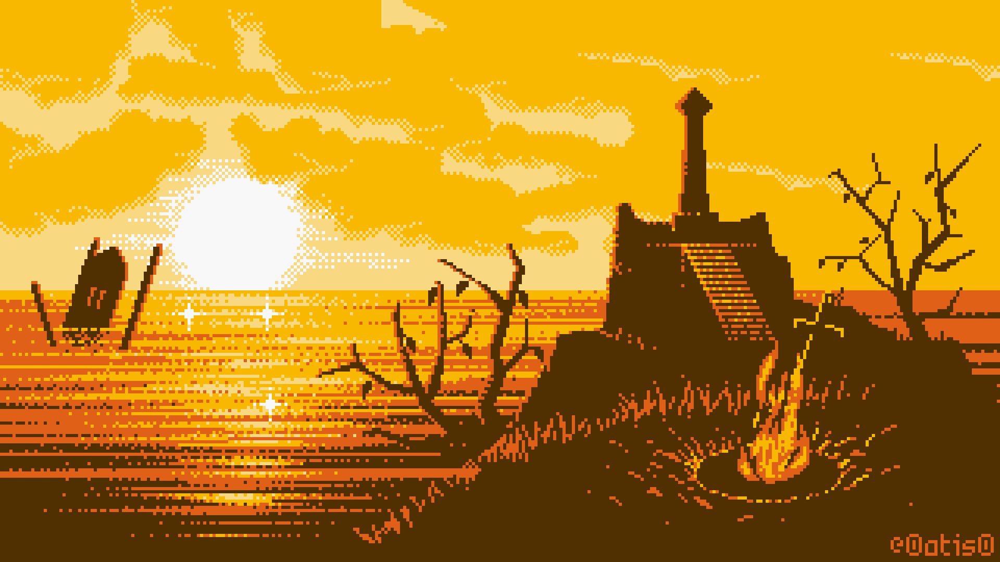

Dark Souls II es un juego de rol de acción de 2014 desarrollado por FromSoftware y publicado por Bandai Namco Entertainment. Fue lanzado para PC, PlayStation 3 y Xbox 360. Teniendo lugar en el reino de Drangleic, el juego presenta una jugabilidad de jugador contra entorno (PvE) y jugador contra jugador (PvP).
Puede que lo hayas visto, en un sueño quizá.
Una tierra sombría y olvidada.
Un lugar donde las almas pueden doblegar tu afligida mente.
Lo perderás todo.
En cuanto recibas la marca.
El símbolo de la maldición.
Un augurio de oscuridad.
Tu pasado. Tu futuro. Tu propia luz.
Nada tendrá sentido, y ni siquiera te importará.
Para entonces, ya no serás un ser humano.
Serás algo que se alimenta de almas.
Un Hueco.
Hace mucho, en una tierra amurallada del norte, un gran rey construyó un magnífico reino.
Creo que lo llamaban Drangleic.
Quizá te resulte familar.
No, cómo ibas a serlo.
Pero un día, te alzarás ante su puerta decrépita.
Sin saber realmente porqué...
Como una polilla atraída a una llama.
Tus alas se quemarán en gran agonía.
Una y otra vez.
Pues ese es tu destino.
El destino de los malditos.
La historia de Dark Souls II no conecta directamente con la de Dark Souls, a pesar de desarrollarse en el mismo mundo. El juego tiene lugar en Drangleic, una tierra anteriormente próspera bajo el mando del rey Vendrick, la cual ha caído en la ruina a través de los años debido a la guerra entre humanos y gigantes, la desaparición repentina del rey y una nueva plaga abismal. Al igual que otros personajes, el protagonista ha llegado al reino desmoronado en busca de una cura para su aflicción, la maldición del no muerto.